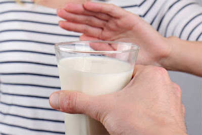

Самоквасний кисляк із магазинного молока – чому не можна

Чому взагалі скисає молоко?
Це обумовлено діяльністю мікроорганізмів, що туди потрапили. Молочнокислі бактерії споживають лактозу і виділяють молочну кислоту, рН падає, молочний білок згортається – вміст банки змінює консистенцію.
До слова, молоко є привабливим субстратом не лише для молочнокислих бактерій. І якщо там розвиваються інші групи мікроорганізмів, то ніхто їм не заборонить продукувати які завгодно метаболіти, наприклад, токсини.
Тому для гарного безпечного кисляка необхідні саме молочнокислі бактерії!
Як молочнокислим бактеріям туди потрапити?
Варіант перший – у Вас є корова. Все банально просто – молочнокислі бактерії живуть на поверхні шкіри тварини, що дає молоко, і потрапляють туди переважно під час доїння. Справедливо додати, що це все так гарно відбувається, коли тварина здорова, а її господарі не лінуються гарно мити руки і посуд.
Варіант другий – у Вас є закваска. На Ваш вибір зараз існує їх широкий асортимент, можна приготувати йогурт чи кефір на свій смак. Просто додаємо порошок, який містить молочнокислі бактерії, в молоко і чекаєм, поки скисне. Це, до речі, можна зробити не лише за допомогою закваски, а й готових магазинних кисломолочних продуктів. Але про це – в наступних дописах.
А тепер згадуємо, ++чому магазинне молоко може так довго зберігатися++ – воно пройшло термообробку. Молочнокислі бактерії – істоти ніжні та вразливі – більшість з них загине вже при 50-60℃. Чого не скажеш про бактерії, які вміють утворювати спори і здатні пережити пастеризацію – свого роду великий потоп місцевого масштабу – якщо збудував ковчег – літр молока твій!
*Отже **що відбувається, коли ми вдома намагаємося приготувати самоквасний кисляк із пастеризованого молока?***Молочнокислі бактерії плавають мертві пузом догори, а їх зальотні колеги радо вилуплюються зі спор і бурхливо множаться! І добре, якщо вони не продукують токсини чи не є носіями генів антибіотикорезистентності!
Якщо це молоко довготривалого зберігання, то, скоріш за все, стоятиме воно трохи довше. Однак, в силу мікробного насичення повітря Вашої кухні, холодильника, посуду і Вас самих, рано чи пізно туди щось насиплеться і проросте. Чи будуть це саме такі корисні і бажані молочнокислі бактерії? Ймовірність, звичайно, є, але, погодьтесь, вона не така висока. Тому, якщо хочеться самому чогось такого поквасити, варто скористатися закваскою.
До слова про домашнє молоко – якщо його перекип'ятити, то, певна річ, молочнокислі бактерії там також загинуть. Тому в такому випадку теж слід їх туди якимось чином поселити – закваска, сметана чи йогурт чудово підійдуть.
Якщо пити таку самоквасну мордегегу трохи перехотілося, перейдемо до млинців.
Термообробка їжі рятує нас від харчових отруєнь вже чимало часу – хвороботворні бактерії не витримують знайомства із сковородою, як і більшість їх не стійких до температури продуктів життєдіяльності, які мають білкову природу. Однак існує ряд термостабільних токсинів, як наприклад, термостабільний ентеротоксин кишкової палички чи сальмонели, які викликають діарею та гастроентерити. Тому спокійніше викинути таке молоко, ніж гратися в рулетку. В азартні ігри приємніше вигравати :)